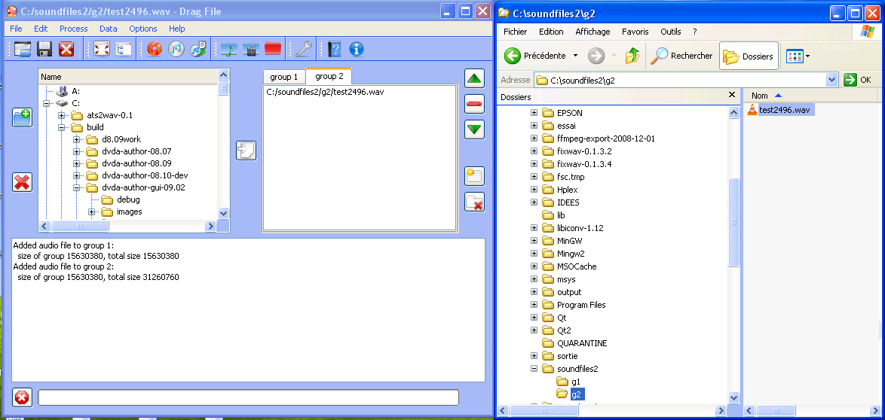
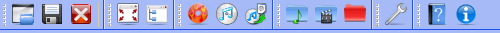
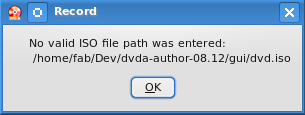
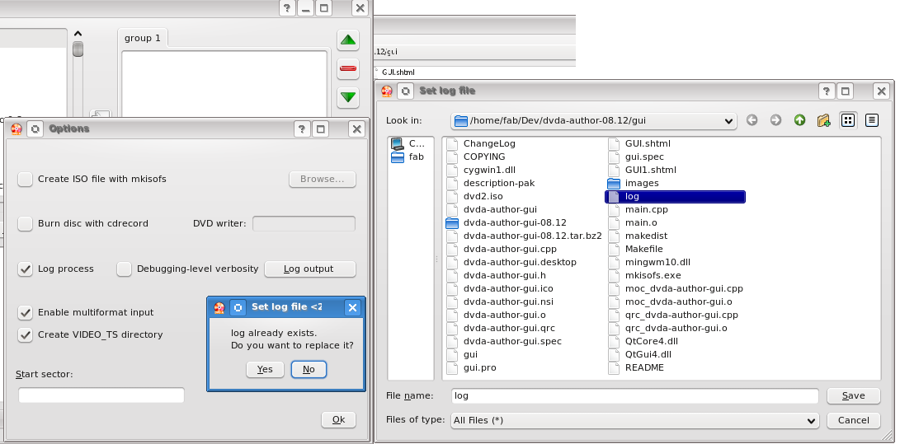

The new Qt 4.8 graphical user interface aims at facilitating disc
authoring.
This webpage documents version 12.09 of the GUI.
Further details are given on the DVD Audio Tools website
It may optionally create an image file of the disc. In this case, the
output will be an .iso file that may be burned to a standard DVD disc by common tools.
On launching a dvda-author project file (.dvp), the full view is as below (here under Windows):

The interface consists of four zones:

Standard input operations
The directory view can be used to select directories or files.
Optionally, you can add a video input directory, which must contain all standard VIDEO_TS files (with extensions IFO, BUP and VOB, as with command line -V video/). This is useful if you want to create universal or "hybrid" discs that can be played on standard DVD-Video players.
In this case press the Video button in the toolbar. An input dialog will pop up to request the rank (starting from 1) of the video title
linked to in VIDEO_TS ; you may use arrow buttons to increase or decrease the rank, or simply enter it manually:

If you do not want to create a DVD-Audio disc but instead extract audio from an existing DVD-Audio structure, first select the DVD-Audio directory or disc,
in the directory view, then click on the Input button.
Standard output operations
You can also select existing directories as output directories. If the directory is not empty, a dialog window will warn you that it will be
erased then recreated. Then press the Output toolbar button. The equivalent command line is: -o output_directory
Should you omit this step, the GUI will output a DVD-Audio file structure in a directory named output/ adjacent to the GUI executable.
To avoid overwriting an existing directory, you may choose to erase it
manually (with all its subfolders and files) by pressing the cross icon  .
.
It may also be useful to create an empty new directory with the add
directory icon 
In this case, an input dialog will pop up requesting a directory name.
Selecting audio files
You can select one or several audio files in the trew view then click on the import
file icon  on the right side. Repeat the operation
on the right side. Repeat the operation
with other files to be placed in the same group. Then use the project maker to create the audio list of each group, as indicated below.

Click on the tab corresponding to the group that you would like to create.
In the tree view select any number of files (you may have to press on Ctrl and/or Shift as is ususal).
You may import as many as 200 files per group/titleset from the tree view by
clicking on the import file icon  (even more if your
files have same audio characteristics).
(even more if your
files have same audio characteristics).
Rather than import files from the tree view, you may also opt for dragging and dropping files from your favorite file system explorer (Windows view below:)
Just click on the tab of the destination group/titleset and drop files into the application. The list will appear in the list view of the right tab.
The read minus icon  on the right may be used to withdraw a selected
file from the audio list.
on the right may be used to withdraw a selected
file from the audio list.
Use the up  and down
and down  arrows to move a selected file within the same
audio group so that it is played sooner (up arrow) or later (down arrow):
arrows to move a selected file within the same
audio group so that it is played sooner (up arrow) or later (down arrow):

Create as many DVD-Audio groups/DVD-Video titlesets as are necessary (with a maximum of 9 for audio groups and 99 for titlesets) by clicking
on the Add group icon 
You may delete a selected group by clicking on the Delete group button


The toolbar contains the following buttons:


A Menu displays the same commands/options as the toolbar buttons:

You can use keyboard shortcuts (e.g. under Windows, Alt+F followed by S to save a project).
The Open/Close project manager button will display (or close) a lateral window which shows both system settings and data settings.

System settings are all session-specific variables, which are collected by the Options dialog (see below).
Data settings are related to input-output variables (like audio files or target output directory).You can expand or collapse the data by pressing on the +/- sign.
To display a project manager, you should first load it by pressing on the Open project button . The project manager window will automatically open and all files initially listed in the project maker tab widget (top right) will be displayed.
Both session-specific system settings and input/ouput data are save to a file named default.dvp. You can also select the filepath and name of the project file: create a .dvp project file by pressing on the Save project button . An XML file will be created with all necessary information.
To burn a disc, use the Burn button on the left of the command zone. You need to have an ISO image of the disc
before burning your DVD-Audio. If this is not the case, a pop-up dialog
will
remind you of creating the ISO file as required:

To create the ISO file you need to have an installed (patched) version of the mkisofs software [see this site].
To create a DVD-Audio file structure press on the Encode button. If the patched version of mkisofs has been installed, an ISO file will then be generated out of the DVD-Audio structure (see below Options).
To extract .wav audio files from a DVD-Audio file structure or burned disc, press instead on Decode. Files will be packed in the output directory selected by pressing on the Output button.
Each title belonging to audio group N in the disc structure will be extracted under subdirectory gN of the output directory.
The lower part of the interface is a log window that displays information on what is being done by the GUI or processed by dvda-author, notably
directory sizes. Below are a few messages generated while authoring a project with the project maker:

An options dialog will pop up on pressing on the Options button in the command zone.
To enable log file creation, check the Log process FWidget
If the log file already exists, the new log will be appended to it and a confirmation dialog will appear (KDE linux view):

Alternatively, enter a new filename in the file dialog window.
To enable ISO file creation, check the run mkisofs FWidget
overwrite the old one) or enter a new iso filename in the file dialog window.
Enter the path to your DVD writer in the DVD writer line after checking the "Burn with cdrecord" box. If you have installed a distribution-specific version of cdrecord, this path may well be a standard path (like /dev/scd0 under GNU/linux Ubuntu), depending on the version of cdrecord you own.
If, more reliably, you have installed the original version by Jörg Schilling, you have to enter a device code (like 2,0,0). To know which kind of path you should use, you can test cdrecord --devices on a command line window and see if it works (distribution-specific versions). Otherwise test cdrecord -scanbus to know about your buses (Schilling version).
These settings will be preserved on exiting the application and automatically restored when the GUI is launched again.
The Full screen button
maximizes the size of the application.
The icon automatically toggles to the Show normal icon
 when the window is maximized.
when the window is maximized.
If you press again on the same button, the size of the window will be changed back to normal size.
A progress bar will display the real-time percentage of expected ouput that was already processed by dvda-author.
If mkisofs is run, another will appear to indicate progress of ISO file creation below the first progress bar.
If you burn your disc with cdrecord, a third bar will appear to indicate progress of DVD burning. This is an estimation for 18x ; for slower writers, the bar may be ahead of real-time burning.
If the burning process appears frozen, reset your writer and open/close your tray. Wait for a while then launch again by pressing on the "Burn" icon.
You need not reprocess your DVD filestructure to start burning again.
You can kill any process by pressing on the Stop process button  on
the left of the progress bar.
on
the left of the progress bar.